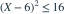

某随机收益 X 几乎处处落在区间 [2,10]。关于它的方差，以下哪项正确？
- A最大可能值为 64，在两个端点各取 1/2 概率时达到
- B最大可能值为 16，仅均匀分布能达到
- C最大可能值为 4，在均值为 6 时必然达到
- D最大可能值为 16，在两个端点各取 1/2 概率时达到
我已思考，展开答案与解析
正确答案：D
- 以区间中点 6 为中心，有

，从而 。 - 若 X 在 2、10 各取一半概率，则均值为 6，平方偏差恒为 16，等号成立。
易错提醒只知道均值位于中点不足以推出达到最大方差。
南审 813 · 2025 · 四·1，PDF第2页
从大题拆分考点并重新编写选项；数值或设问有调整。
查看参考来源